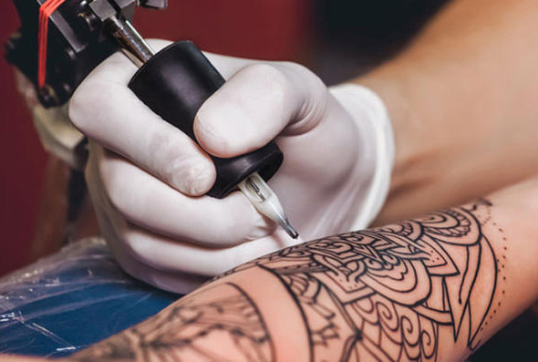
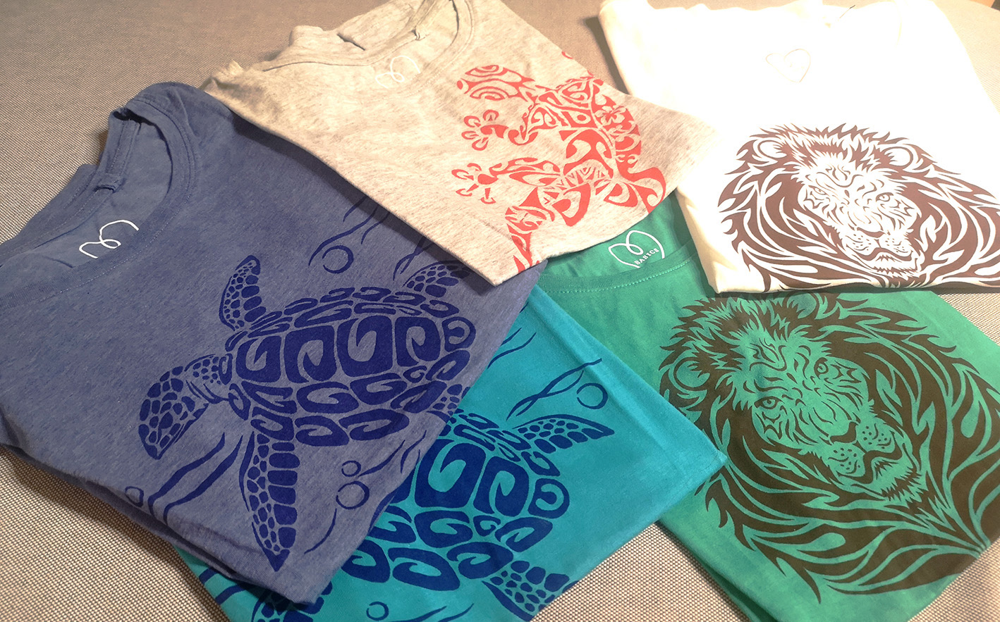
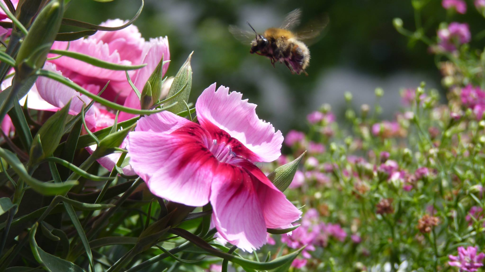

Hallo, ich bin Sabina Gudzenova aus Bulgarien. Meine größte Leidenschaft ist es, Dinge zu kreieren. Hier möchte ich einige meine Arbeiten vorstellen:
Tattoos
Meine Freunde haben viel Spaß an meinem Hobby. Außerdem bin ich 2 bis 4 Mal im Jahr Gast-Artist in den Studios "Tattoo 13" und "Ink King Tattoo" in Sofia.
 Mehr erfahrenKunsthandwerkliche Arbeiten
Als ausgebildete Textildesignerin macht es mir viel Spaß, mit Textilien und verschiedenen Strukturen zu spielen.
 MehrFotos zum mitnehmen
Auf meinen Reisen und im täglichen Leben mache ich viele Fotos und habe viel Spaß dabei. Viele davon stelle ich zur freien Verwendung auf verschiedenen Plattformen zur Verfügung. Hier auch.
 Mehr